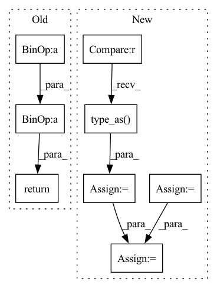

Pattern ID :8518
Before Change
absx = torch.abs(x)
absx2 = absx ** 2
absx3 = absx ** 3
return (1.5 * absx3 - 2.5 * absx2 + 1) * ((absx <= 1).type_as(absx)) + (
-0.5 * absx3 + 2.5 * absx2 - 4 * absx + 2) * (
((absx > 1) * (absx <= 2)).type_as(absx))
After Change
abs_x = torch.abs(x)
abs_x2 = abs_x ** 2
abs_x3 = abs_x ** 3
cubic1 = (1.5 * abs_x3 - 2.5 * abs_x2 + 1) * ((abs_x <= 1).type_as(abs_x))
cubic2 = (-0.5 * abs_x3 + 2.5 * abs_x2 - 4 * abs_x + 2) * (((abs_x > 1) * (abs_x <= 2)).type_as( abs_x))
cubic = cubic1 + cubic2
return cubic
In pattern: SUPERPATTERN
Frequency: 3
Non-data size: 8
Instances Fragment ID: 29546986
Project Name: lornatang/srgan-pytorch
Commit Name: f32b4358d6c5e47793018b9fd88d8fa6513d4d52
Time: 2022-06-22
Author: liuchangyu1111@gmail.com
File Name: imgproc.py
M Class Name: AnonimousClass
N Class Name: AnonimousClass
M Method Name: _cubic(1)
N Method Name: _cubic(1)
M Parent Class:
N Parent Class:
M File Name: imgproc.py
N File Name: imgproc.py
M Start Line: 99
M End Line: 104
N Start Line: 43
N End Line: 50
Before Change
:math:`-\mathrm{logpreds} \cdot \mathrm{targets}`
assert logpreds.size() == targets.size()
result = -logpreds * targets
// Sum across dims if axis given or more than 1 dim
if dims is not None:
if not hasattr(dims, "__len__"):
dims = [dims]
for dim in dims:
result = th.sum(result, dim=int(dim))
return result
def l2_loss(model):After Change
if log_preds.size() == targets.size():
return log_categorical_crossentropy_1_hot(log_preds, targets)
n_classes = log_preds.size()[1]
n_elements = 0
losses = []
for i_class in range(n_classes):
mask = targets == i_class
mask = mask.type_as( log_preds)
n_elements -= th.sum(mask)
losses.append(th.sum(mask * log_preds[:,i_class]))
return th.sum(th.stack(losses)) / n_elements
Fragment ID: 29547841
Project Name: braindecode/braindecode
Commit Name: a294170aab00bfa17778ad48b52150bbe72c0bd0
Time: 2017-10-03
Author: robintibor@gmail.com
File Name: braindecode/torch_ext/losses.py
M Class Name: AnonimousClass
N Class Name: AnonimousClass
M Method Name: log_categorical_crossentropy(2)
N Method Name: log_categorical_crossentropy(3)
M Parent Class:
N Parent Class:
M File Name: braindecode/torch_ext/losses.py
N File Name: braindecode/torch_ext/losses.py
M Start Line: 4
M End Line: 31
N Start Line: 56
N End Line: 66
Before Change
absx = torch.abs(x)
absx2 = absx ** 2
absx3 = absx ** 3
return (1.5 * absx3 - 2.5 * absx2 + 1) * ((absx <= 1).type_as(absx)) + (
-0.5 * absx3 + 2.5 * absx2 - 4 * absx + 2) * (
((absx > 1) * (absx <= 2)).type_as(absx))
After Change
abs_x = torch.abs(x)
abs_x2 = abs_x ** 2
abs_x3 = abs_x ** 3
cubic1 = (1.5 * abs_x3 - 2.5 * abs_x2 + 1) * ((abs_x <= 1).type_as(abs_x))
cubic2 = (-0.5 * abs_x3 + 2.5 * abs_x2 - 4 * abs_x + 2) * (((abs_x > 1) * (abs_x <= 2)).type_as( abs_x))
cubic = cubic1 + cubic2
return cubic
Fragment ID: 29546991
Project Name: lornatang/real_esrgan-pytorch
Commit Name: ca6fd2382806acdb1ec2f4af0ae03a53c58d33a6
Time: 2022-06-14
Author: liuchangyu1111@gmail.com
File Name: imgproc.py
M Class Name: AnonimousClass
N Class Name: AnonimousClass
M Method Name: _cubic(1)
N Method Name: _cubic(1)
M Parent Class:
N Parent Class:
M File Name: imgproc.py
N File Name: imgproc.py
M Start Line: 1453
M End Line: 1458
N Start Line: 60
N End Line: 67